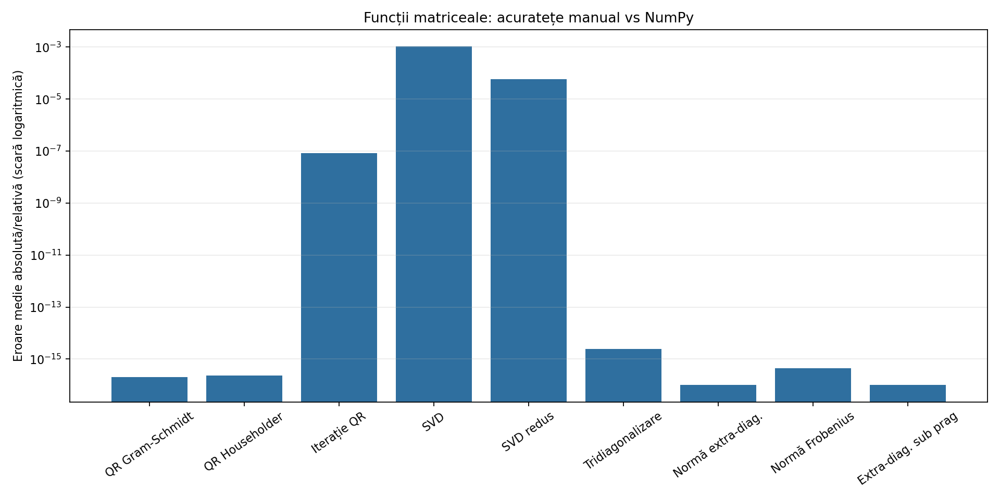
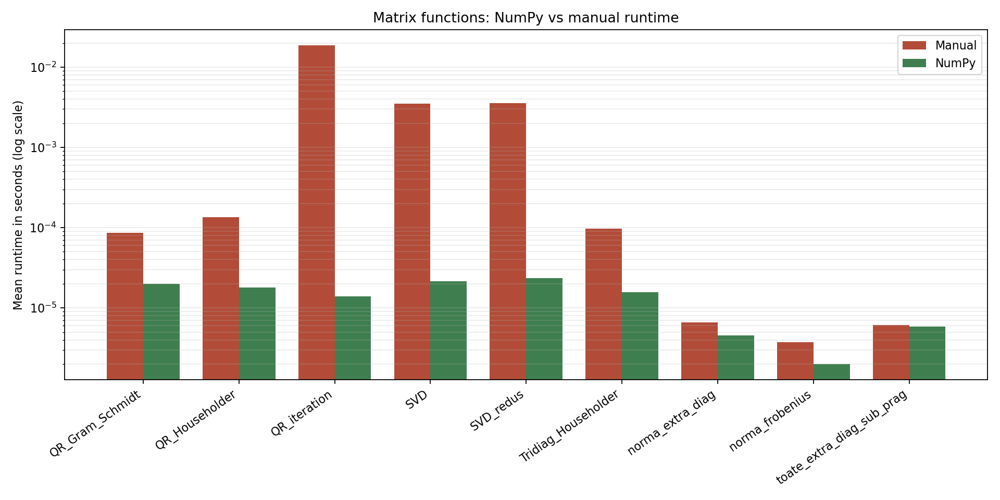
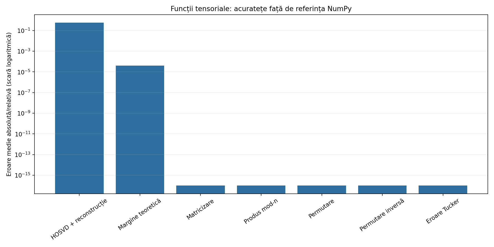
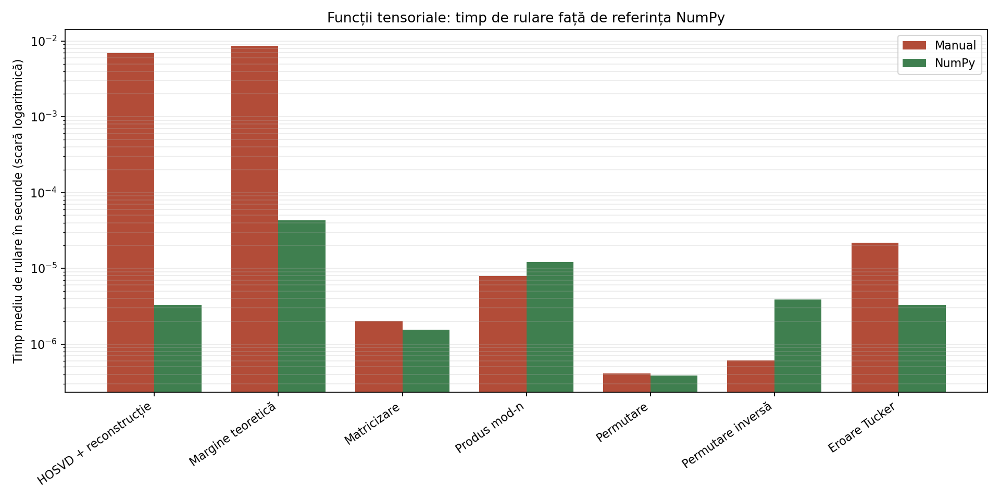

Proiectul are două direcții egale: implementarea manuală a metodelor numerice din spatele SVD și folosirea lor într-un compresor de imagini color bazat pe Tucker/HOSVD.
SVD, aproximare de rang redus, tensori, matricizare și produs mod-n.
QR, Householder, tridiagonalizare, iterație QR și construcția SVD.
Compresia imaginilor RGB și Grayscale prin descompunere Tucker pe blocuri.
SVD descompune o matrice în direcții ortogonale și valori singulare. Valorile singulare mari descriu componentele dominante ale matricei.
În această formulă, \(U\) și \(V\) sunt ortogonale, iar \(\Sigma\) este pseudo-diagonală.
Interpretare: o matrice este rescrisă ca o combinație de componente ordonate după importanță. Pentru compresie, păstrăm doar componentele dominante.
În loc să păstrăm toate valorile singulare, alegem doar primele \(r\):
Teorema Eckart-Young-Mirsky garantează că această aproximare este optimă în norma Frobenius dintre toate matricele de rang cel mult \(r\).
Legătura cu imaginea: păstrăm informația dominantă și acceptăm o eroare controlată pentru a reduce datele stocate.
Implementarea nu apelează direct `np.linalg.svd`, `eig`, `eigh` sau `qr` în codul principal. Metodele sunt construite pas cu pas.
Se pornește de la \(A^T A\) sau \(A A^T\), în funcție de dimensiunea matricei.
Reflexiile reduc matricea la formă tridiagonală, păstrând valorile proprii.
QR cu shift aproximează valorile proprii mai rapid decât iterația simplă.
\(\sigma_i=\sqrt{\lambda_i}\), apoi se construiesc vectorii singulari.
O imagine color are trei dimensiuni: înălțime, lățime și canal RGB. De aceea este natural să fie tratată ca tensor.
Un tensor este o generalizare a vectorilor și matricelor: vectorul are un mod, matricea are două moduri, iar imaginea RGB are trei moduri.
Pentru a aplica SVD pe un tensor, îl transformăm temporar în matrici. Această operație se numește matricizare sau unfolding.
Dimensiuni: \(H \times W \times 3\)
\(A_{(1)}\): rânduri pe înălțime
\(A_{(2)}\): rânduri pe lățime
\(A_{(3)}\): rânduri pe canal RGB
Produsul mod-n este calculat prin regula \((\mathcal{A}\times_n M)_{(n)} = M A_{(n)}\), deci operațiile tensoriale devin înmulțiri matriceale obișnuite.
Descompunerea Tucker extinde ideea SVD la tensori: păstrează un nucleu comprimat numit core tensor și extragerea unor baze ortonormale care definesc spațiile corespunzătoare fiecărui mod al unui tensor.
\(\mathcal{G}\) este tensorul de bază, iar \(U^{(n)}\) conține direcțiile dominante pentru modul \(n\).
\(\mathcal{A}\)
\(A_{(1)}, A_{(2)}, A_{(3)}\)
păstrăm \(R_n\) coloane
proiectăm pe moduri
forma Tucker comprimată
Aplicația practică folosește HOSVD/Tucker pe blocuri de imagine. Scopul nu este compresie fără pierderi, ci un compromis controlat între dimensiune, eroare și calitate vizuală.
Imaginea este încărcată și normalizată în intervalul \([0,1]\).
Imaginea este împărțită în blocuri \(blockSize \times blockSize \times 3\).
Fiecare bloc este comprimat cu ranguri \([R_b, R_b, 3]\).
Blocurile sunt reconstruite și se calculează raportul de compresie și eroarea.
Rangul spațial este controlat prin factorul de compresie:
Canalul RGB rămâne cu rang 3, pentru a păstra cât mai bine culorile.
Raportul teoretic pentru un bloc compară datele inițiale cu datele Tucker:
Datele comprimate includ nucleul \(G\) și matricile factoriale \(U^{(1)}, U^{(2)}, U^{(3)}\). Un \(CR\) mai mare înseamnă mai puține date stocate, dar de obicei și eroare mai mare.
Ordinea de mai jos este fluxul real: `main.py` pornește compresia, `image_compressor.py` lucrează pe blocuri, iar `matematica.py` face HOSVD și operațiile tensoriale.
Butonul „Execută compresia” pornește algoritmul.
Citește imaginea, convertește RGB, normalizează tensorul și calculează blocurile.
Pentru fiecare bloc, creează reprezentarea Tucker: \(G\) și \(U^{(n)}\).
În HOSVD, fiecare matricizare este aproximată prin SVD redus.
Reconstruiește blocul comprimat prin produse mod-n succesive.
Calculează eroarea absolută și eroarea relativă de reconstrucție.
raport teoretic între datele originale și Tucker
eroare Frobenius raportată la norma originalului
timp măsurat în `main.py` cu `time.time()`
Norme, QR, Householder, tridiagonalizare, QR_iteration, SVD, SVD redus, HOSVD și reconstrucție.
Împarte imaginea în blocuri, aplică Tucker/HOSVD și calculează raportul de compresie, eroarea și timpul.
Interfața Streamlit pentru încărcare imagine, alegere parametri, vizualizare și descărcare rezultate.
Testele și comparațiile cu NumPy sunt separate în `src/tests.py` și `src/comparison.py`.

Acuratețea funcțiilor matriceale implementate manual.

Comparație de timp cu funcțiile NumPy.

Acuratețea funcțiilor tensoriale.

Timpul de rulare pentru operațiile tensoriale.
Implementarea este transparentă.
SVD redus oferă control asupra erorii.
Tucker păstrează structura RGB a imaginii.
Aplicația arată compromisul compresie-calitate.
Este mai lentă decât NumPy.
Calculul prin \(A^T A\) poate amplifica erori.
HOSVD nu este aproximarea Tucker optimă.
Compresia pe blocuri poate produce discontinuități vizuale.
Proiectul demonstrează traseul complet de la teoria SVD la o aplicație practică de compresie a imaginilor.
SVD oferă mecanismul de selecție a informației importante prin valori singulare.
HOSVD extinde această idee la imagini privite ca tensori, păstrând structura pe înălțime, lățime și canal RGB.
Golub & Van Loan, Matrix Computations.
Kolda & Bader, Tensor Decompositions and Applications.
De Lathauwer et al., A Multilinear Singular Value Decomposition.